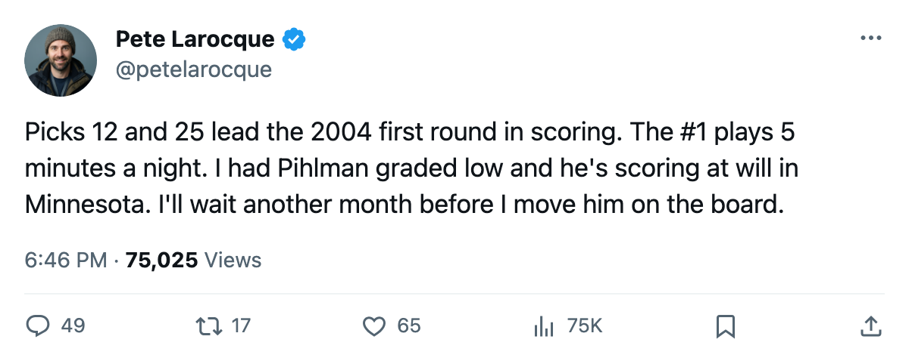
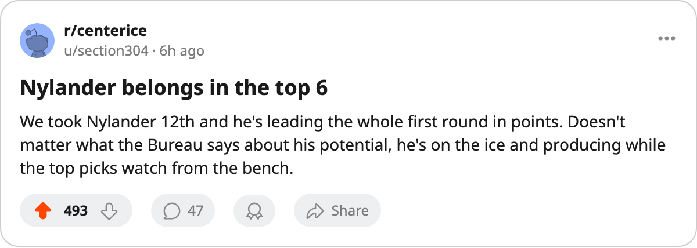

The 2004 Draft's Scoring Leaders Are Pick 12 and Pick 25
Two mid-round selections lead last June's first round in points. The top 3 picks are behind them.
 Pete LarocqueScouting editor · The Prospect File
Pete LarocqueScouting editor · The Prospect File
Roger Nylander72 has 4 points in 4 games for  San Jose Sharks. He was the 12th pick in June. Kirk Vas73 has 4 points in 4 games for
San Jose Sharks. He was the 12th pick in June. Kirk Vas73 has 4 points in 4 games for  Nashville Predators. He was the 25th pick. They are tied for the lead in the 2004 first round's scoring, and neither was a top-5 selection.
Nashville Predators. He was the 25th pick. They are tied for the lead in the 2004 first round's scoring, and neither was a top-5 selection.
The top 3 picks from last June are Vaclav Spacek81 ( Toronto Maple Leafs, 6 GP, 3 pts), Kristian Timander74 (
Toronto Maple Leafs, 6 GP, 3 pts), Kristian Timander74 ( Dallas Stars, 5 GP, 3 pts) and Karel Duba77 (
Dallas Stars, 5 GP, 3 pts) and Karel Duba77 ( Los Angeles Kings, 4 GP, 3 pts). Each has 3 points. Neither Nylander nor Vas was picked higher than 12th.
Los Angeles Kings, 4 GP, 3 pts). Each has 3 points. Neither Nylander nor Vas was picked higher than 12th.
| Pick | Player | Team | GP | Pts | Overall | Potential |
|---|---|---|---|---|---|---|
| 12 | Nylander | SJ | 4 | 4 | 70 | — |
| 25 | Vas | NSH | 4 | 4 | 72 | — |
| 9 | Pihlman | MIN | 3 | 3 | 76 | 56 |
| 3 | Duba | LA | 4 | 3 | 77 | 51 |
| 2 | Timander | DAL | 5 | 3 | 72 | — |
| 1 | Spacek | TOR | 6 | 3 | 80 | 91 |
| 19 | Stahle | TOR | 6 | 2 | 76 | 96 |
| 5 | Salminen | PIT | 4 | 1 | 70 | — |
| 16 | Asplund | BOS | 4 | 1 | 73 | — |
| 10 | Lydman | ANA | 5 | 1 | 77 | 52 |
The ones who haven't skated
Picks 4, 7, 11, 13, 15, 17, 21, 22, 23, 24, 26 and 30 have not played a minute. That includes Mika Sulku66 at  Calgary Flames, Marcel Janota77 at
Calgary Flames, Marcel Janota77 at  Carolina Hurricanes, and Torsten Schmitt73 at
Carolina Hurricanes, and Torsten Schmitt73 at  Chicago Blackhawks. Twelve of the 28 first-rounders still carry zero games.
Chicago Blackhawks. Twelve of the 28 first-rounders still carry zero games.
The remaining 6 who have skated without a point on the board are Sami Ronnqvist67 (pick 6,  Montreal Canadiens, 5 GP), Vladimir Kloucek69 (pick 8,
Montreal Canadiens, 5 GP), Vladimir Kloucek69 (pick 8,  St. Louis Blues, 3 GP), Steffen Prommersberger68 (pick 14,
St. Louis Blues, 3 GP), Steffen Prommersberger68 (pick 14,  Ottawa Senators, 3 GP), Niklas Pesonen62 (pick 20,
Ottawa Senators, 3 GP), Niklas Pesonen62 (pick 20,  Detroit Red Wings, 4 GP), Craig Abid66 (pick 28,
Detroit Red Wings, 4 GP), Craig Abid66 (pick 28,  New York Rangers, 3 GP) and Yury Salei70 (pick 29,
New York Rangers, 3 GP) and Yury Salei70 (pick 29,  Minnesota Wild, 4 GP).
Minnesota Wild, 4 GP).
The Pihlman line
Tuomo Pihlman78 went 9th and has 3 points in 3 games for Minnesota Wild. His potential sits at 56 on the Book. His overall reads 76, and the Development Index has him at +4 above that base. The Index tracks form; the potential is the Bureau's projection of where the base lands once form normalizes.
Duba carries a potential of 52, Lydman's sits at 52. Both are scoring. Pihlman's 56 puts him in the same group: not a top-of-the-lineup contributor on paper, playing at a level the grades call unlikely.
The front office is going to look at the same sheet in March and see a 56 next to a point-per-game October. The number that carries weight at the trade deadline is the potential.
What it means for the board
Nylander's overall sits at 70, Vas at 72. Both are exactly where the Bureau placed them on draft day. They are producing at a level the grades already reflected, which means the teams that picked ahead of them on the board spent capital on players who, right now, are producing the same or less.
Spacek, the #1 pick, plays 5.8 minutes a night and has 3 points in 6 games. The Bureau projects him at 91 potential, the highest of any 2004 first-rounder who has skated. The projection says that outweighs what 4 or 6 points from a 12th-pick center or a 25th-pick defenseman look like by October.
This class is a timing story. The players the Bureau graded highest are the ones getting the fewest minutes. Spacek plays 5.8. Andreas Stahle76, the 19th pick with 96 potential, plays 12.0. Janota, the 7th pick with 89 potential, hasn't played at all. The guys putting points up right now are the ones the Bureau figured were already good enough to use.

